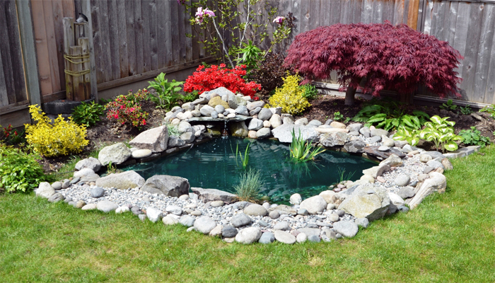

Las Plagas, fácil de encontrar, difícil de eliminar. Ya que Arruinan la belleza de nuestro jardín, aquí veremos como prevenir y como actuar ante estas plagas.
Evitar Plagas en el Jardín
1) El primer paso es mantener las plantas fuertes y en buenas condiciones. De esta forma es más difícil que le ataque una plaga.
2) plantar plantas autóctonas ya que enferman menos y además se adaptan mejor al jardín. Es importante que hayan diferentes tipos de plantas autóctonas.
3) Lo más importante es que las plagas grandes no lleguen hasta tu jardín, para ello puedes hacer una barrera con cenizas por ejemplo.
4) Crear un estanque en tu huerto o jardín. No es necesario que sea muy grande, con dedicarle un metro cuadrado o similar podemos crear este espacio que va a favorecer la biodiversidad y atraerá a muchos animales (incluyendo los depredadores) que van a favorecer la autoregulación de las plagas impidiendo que éstas proliferen.
Combatir Plagas en el Jardín
5) Lo primero es diagnosticar a nuestras plantas para averiguar a qué nos enfrentamos
6) Hay que elegir el insecticida que mejor se adecúe a nuestras necesidades. Evaluar si utilizamos insecticidas químicos o naturales.
7) Si aún así el jardín sufre una plaga tienes que eliminar las plantas infectadas o muertas.
8) Hay jabones potásicos para limpiar las plantas. Con este jabón puedes eliminar algunas de las enfermedades más frecuentes.